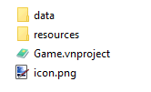

Getting Started: Data Formats
As a developer or if you just doing some scripting in Visual Novel Maker, you will access different kind of project files and data structures. This guide gives you a very quick overview about the structure of a Visual Novel Maker project. For more detailed information about certain data structures, please check theData Formats Reference.
Project Structure
A valid Visual Novel Maker project consists of the following files and folders.

data
This folder contains all data about the project excluding resources like graphics and audio.
resources
This folder contains all graphic and audio resources for the project. However, you should only import new resources using Resource Manager.
Game.vnproject
The project file, it doesn't stores any data but is more like an anchor-point to open and identify a Visual Novel Maker project.
icon.png
The default game icon. That icon is not used for the game's executable but only for the game window. The executable icon has to be configured separately depending on the platform.